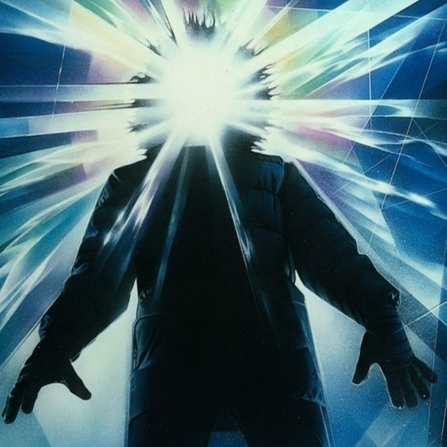

My Favorite Horror Movies
Since halloween is coming up and I love horror movies and slashers, I thought I would recommend some movies to watch.
I'm only going to do the best of each of their own category with brief reasons on why they're there.
Slasher
Halloween

The original Halloween defined the slasher genre.
It inspired many others such as Friday the 13, Child's play, and Scream(in a different way.)
Because it's my favorite doesn't mean I think it's the best.
Sci-Fi Horror
The Thing
It's hard to talk about the movie without spoiling it so if you haven't I highly recommend to go watch it.
Comedy Horror
(for fun)
Scary Movie
I don't really have to say much on why it's number one, but the original is the best parody of horror movies.
It's fun to watch with family or friends, but it's not a "true" horror movie (obviously).
Honorable mentions (not in a particular order)
- Nightmare on Elm Street.
- Hellraiser 1-2(some of my favorites)
- Saw
- The Shining(another outlier(don't watch Dr. Sleep though(it stinks)))
- Night of the Living Dead
- Alien
- Texas Chainsaw
- The Mist
- Evil Dead I&II
- The Fly
- uhhhhhhhhh..... Monster House